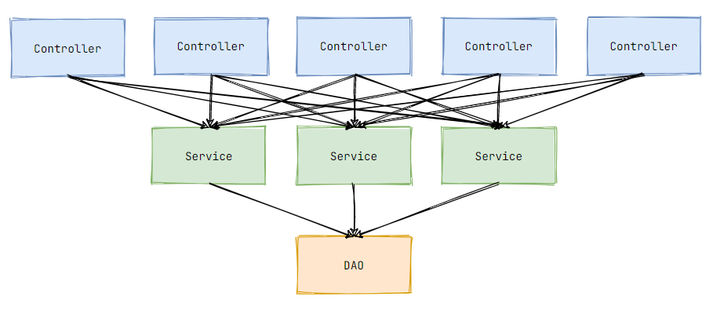
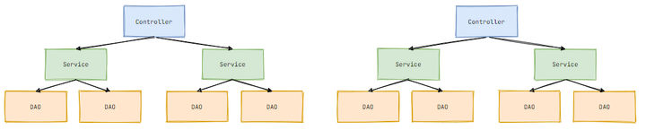

IoC是什么？为什么要用？
在学习java后端的过程，spring框架已经是一个绕不开的话题，其中的新技术我们虽然会用却很少有人会思考问什么要用这个技术，IoC就是如此，因此在讨论IoC是什么之前，我想先讨论为什么Spring要引入这项技术。
为什么要用IoC?
假设我们现在没有Spring框架可用，也没有什么所谓的Ioc，仅仅用传统的Servlet开发项目
传统开发模式
三层架构是经典的开发模式，我们一般将视图控制、业务逻辑和数据库操作分别抽离出来单独形成一个类，这样各个职责就非常清晰且易于复用和维护。大致代码如下：
视图控制层：
1 |
|
业务逻辑层
1 | public class UserServiceImpl implements UserService{ |
数据库操作层
1 | public class UserDaoImpl implements UserDao{ |
上层依赖下层，抽象之后如下图：

业界普遍按这种分层方式组织代码，其核心思想是职责分离。层次越低复用程度越高，比如一个 DAO 对象往往会被多个 Service 对象使用，一个 Service 对象往往也会被多个 Controller 对象使用：

条理分明，井然有序。这些被复用的对象就像一个个的组件，供多方使用。
虽然这个倒三角看上去非常漂亮，然而我们目前的代码有一个比较大的问题，那就是我们只做到了逻辑复用，并没有做到资源复用。
上层调用下一层时，必然会持有下一层的对象引用，即成员变量。目前我们每一个成员变量都会实例化一个对象，如下图所示：

每一个链路都创建了同样的对象，造成了极大的资源浪费。许多组件只需要实例化一个对象就够了，创建多个没有任何意义。针对对象重复创建的问题，我们自然而然想到了单例模式。只要编写类时都将其写为单例，这样就避免了资源浪费。但是，引入设计模式必然会带来复杂性，况且还是每一个类都为单例，每一个类都会有相似的代码，其弊端不言自明。
仅仅是资源的浪费倒还好，因为可以堆硬件，然而三层架构还有另一个一个致命缺陷，那就是变化的代价太大。
假设有 10 个 Controller 依赖了 UserService，最开始实例化的是 UserServiceImpl，后面需要换一个实现类 OtherUserServiceImpl，我就得逐个修改那 10 个 Controller，非常麻烦。更换实现类的需求可能不会太多，没多大说服力。那咱们看另一个情况。
传统创建组件的过程非常简单，new一下就行了，可很多时候创建一个组件没那么容易。比如 DAO 对象要依赖一个这样的数据源组件：
1 | public class UserDaoImpl implements UserDao{ |
该数据源组件要想真正生效需要对其进行许多配置，这个创建和配置过程是非常麻烦的。而且配置可能会随着业务需求的变化经常更改，这时候你就需要修改每一个依赖该组件的地方，牵一发而动全身。这还只是演示了一个数据源的创建配置过程，真实开发中可有太多组件和太多配置需要编码了，其麻烦程度堪称恐怖。
当然，这些问题都可以引入设计模式来解决，不过这样一来又绕回去了：设计模式本身也会带来复杂性。这就像一种死循环：传统开发模式编码复杂，要想解决这种复杂却得陷入另一种复杂。
难道没有办法解决了吗？当然不是的，在引出解决方案前，我们先来梳理一下目前出现的问题：
- 创建了许多重复对象，造成大量资源浪费
- 更换实现类需要改动多个地方
- 创建和配置组件工作繁杂，给组件调用方带来极大不便
透过现象看本质，这些问题的出现都是同一个原因：组件的调用方参与了组件的创建和配置工作。
就相当于你去下馆子，想要吃饭还要自己去后厨做饭一样，显然这不符合常理
其实调用方只需关注组件如何调用，至于这个组件如何创建和配置又与调用方有什么关系呢？我去餐馆吃饭应该只需点菜，饭菜并不需要我亲自去做，餐馆自然会做好给我送过来。如果我们编码时，有一个「东西」能帮助我们创建和配置好那些组件，我们只负责调用该多好。这个「东西」就是容器。
容器这一概念我们已接触过，Tomcat 就是 Servlet 的容器，它帮我们创建并配置好 Servlet，我们只需编写业务逻辑即可。试想一下，如果 Servlet 要我们自己创建，HttpRequest、HttpResponse 对象也需要我们自己配置，那代码量得有多恐怖。
Tomcat 是 Servlet 容器，只负责管理 Servlet。我们平常使用的组件则需要另一种容器来管理，这种容器我们称之为 IoC 容器。
IoC是什么？
通过上面的讲解，相比你已经对IoC的诞生背景有了一定的了解，接下来我们就来介绍IoC究竟是什么。
控制反转和依赖注入
IoC(Inversion of Control),又名控制反转，是指对象的创建和配置的控制权从调用方转移给容器，而不必再通过传统方式new出来，IoC已经帮我们做好了这一切。
有了 IoC 容器，我们可以将对象交由容器管理，交由容器管理后的对象称之为 Bean。调用方不再负责组件的创建，要使用组件时直接通过注解获取 Bean 即可：
1 |
|
我只想说注解永远的神
调用方只需按照约定声明依赖项，所需要的 Bean 就自动配置完毕了，就好像在调用方外部注入了一个依赖项给其使用，所以这种方式称之为 依赖注入（Dependency Injection，缩写为 DI）。
控制反转和依赖注入是一体两面，都是同一种开发模式的表现形式。
IoC 轻而易举地解决了我们刚刚总结的问题：
对象交由容器管理后，默认是单例的，这就解决了资源浪费问题。
若要更换实现类，只需更改 Bean 的声明配置，即可达到无感知更换：
1 |
|
现在组件的使用和组件的创建与配置完全分离开来。调用方只需调用组件而无需关心其他乱七八糟的东西，这极大提高了我们的开发效率，也让整个应用充满了灵活性、扩展性。
这样看来，我们如此中意 IoC 不是没有道理的。